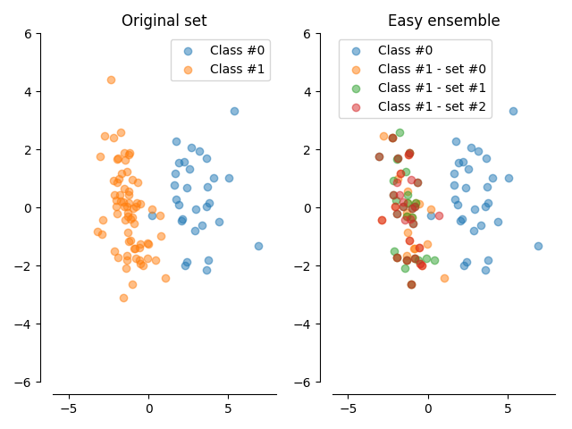

Easy ensemble¶
An illustration of the easy ensemble method.
# Authors: Christos Aridas
# Guillaume Lemaitre <g.lemaitre58@gmail.com>
# License: MIT
import matplotlib.pyplot as plt
from sklearn.datasets import make_classification
from sklearn.decomposition import PCA
from imblearn.ensemble import EasyEnsemble
print(__doc__)
# Generate the dataset
X, y = make_classification(n_classes=2, class_sep=2, weights=[0.3, 0.7],
n_informative=3, n_redundant=1, flip_y=0,
n_features=20, n_clusters_per_class=1,
n_samples=100, random_state=10)
# Instanciate a PCA object for the sake of easy visualisation
pca = PCA(n_components=2)
# Fit and transform x to visualise inside a 2D feature space
X_vis = pca.fit_transform(X)
# Apply Easy Ensemble
ee = EasyEnsemble(n_subsets=3)
X_resampled, y_resampled = ee.fit_sample(X, y)
X_res_vis = []
for X_res in X_resampled:
X_res_vis.append(pca.transform(X_res))
# Two subplots, unpack the axes array immediately
f, (ax1, ax2) = plt.subplots(1, 2)
ax1.scatter(X_vis[y == 0, 0], X_vis[y == 0, 1], label="Class #0", alpha=0.5)
ax1.scatter(X_vis[y == 1, 0], X_vis[y == 1, 1], label="Class #1", alpha=0.5)
ax1.set_title('Original set')
ax2.scatter(X_vis[y == 0, 0], X_vis[y == 0, 1], label="Class #0", alpha=0.5)
for iy, e in enumerate(X_res_vis):
ax2.scatter(e[y_resampled[iy] == 1, 0], e[y_resampled[iy] == 1, 1],
label="Class #1 - set #{}".format(iy), alpha=0.5)
ax2.set_title('Easy ensemble')
# make nice plotting
for ax in (ax1, ax2):
ax.spines['top'].set_visible(False)
ax.spines['right'].set_visible(False)
ax.get_xaxis().tick_bottom()
ax.get_yaxis().tick_left()
ax.spines['left'].set_position(('outward', 10))
ax.spines['bottom'].set_position(('outward', 10))
ax.set_xlim([-6, 8])
ax.set_ylim([-6, 6])
ax.legend()
plt.tight_layout()
plt.show()
Total running time of the script: ( 0 minutes 0.319 seconds)